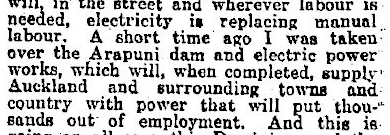
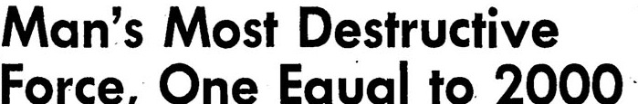

Vinay Kudari
M.S. in Computer Science
AWS Health
Personalization
Apple Finance
Google Cloud
Learning from agent behavior
to improve harnesses and models.
Real use drives a better harness
Find recurring failures. Improve the harness without breaking other tasks.

“power that will put thousands out of employment”
Letter to the editor
Otago Daily Times
May 28, 1930 · original newspaper scan

“Man's Most Destructive Force”
Front-page headline
Los Angeles Times
Aug 7, 1945 · original front page
“it would also probably destroy jobs”
Reuter News Service
Deseret News
Sept 14, 1995 · archive headline
METR's estimated 50% task-completion horizon · model releases through Feb 2026
A question to ask
If AI can build more, what makes your project valuable?
Examples are task durations, not guarantees. Dashed line: hypothetical continuation, not a forecast. Estimates above 16 hours are unreliable.
Source: METR, Time Horizon 1.1 · selected model releases through Feb 2026 · dashboard last updated Sept 2026
“Software development is over?”
Harder problems.
A lot left to solve.
As building gets easier, we take on harder problems.
The work expands with what becomes possible.
Fewer people, more leverage per person
Base44: solo founder, sold to Wix for ~$80M
Harder problems solved; a world that runs more efficiently
Source: Wix press release, Jun 18, 2025 (~$80M initial consideration plus earn-outs) · Ctech by Calcalist
The arrival of this new intelligence will profoundly change our country and the world in ways we cannot fully understand.
Eric Schmidt
Former Google CEO · U.S. House testimony, April 2025
His 2025 forecast: superintelligence within about six years.